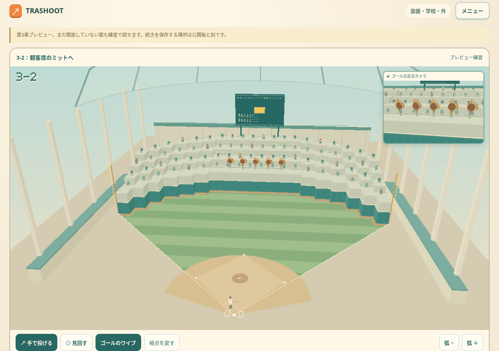
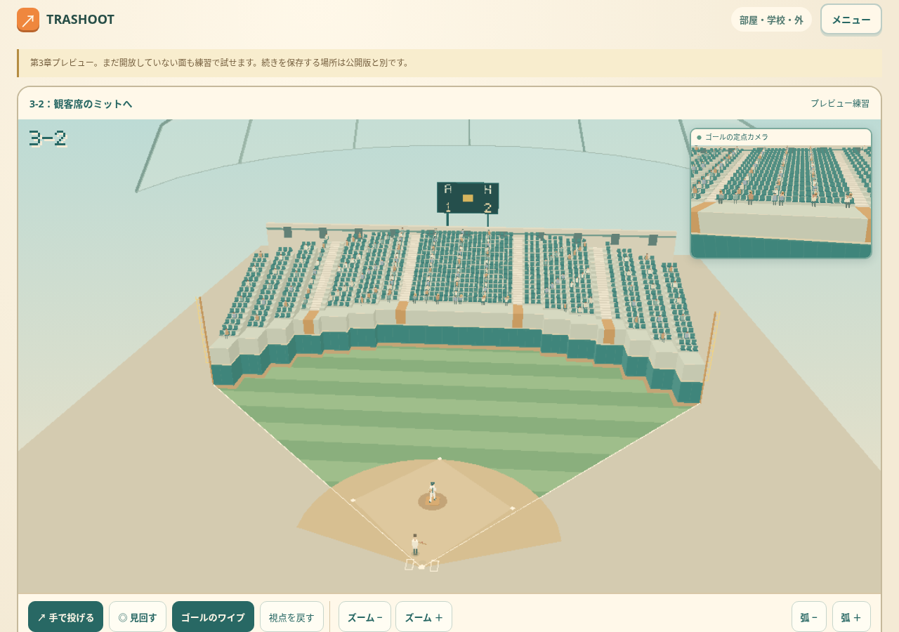
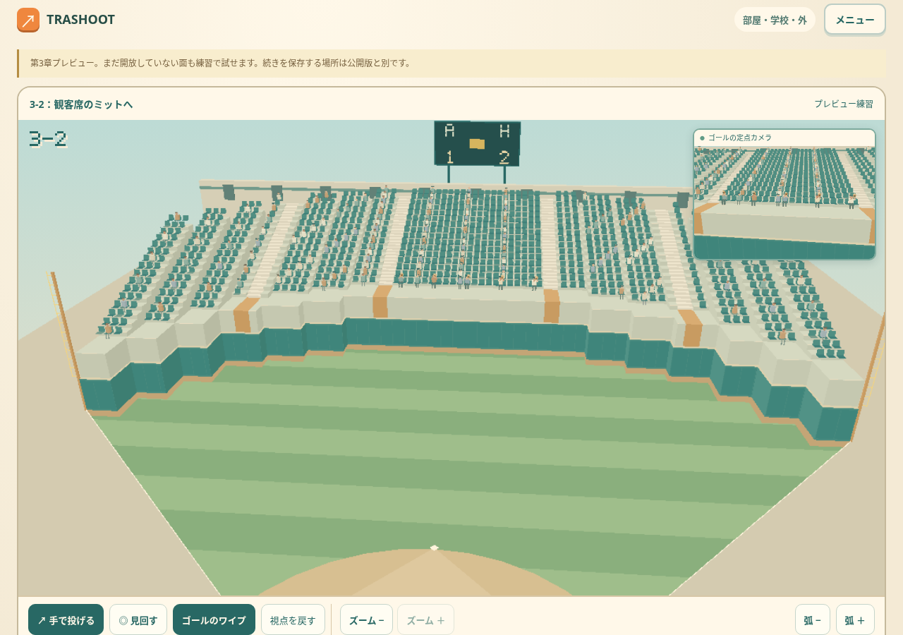
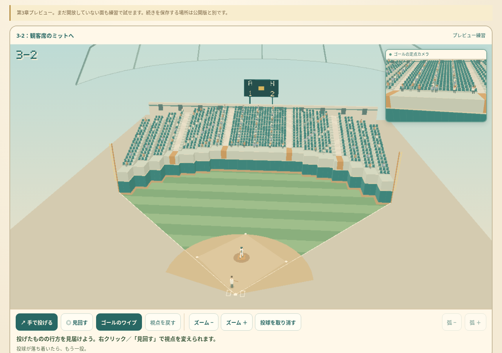

TRASHOOT · 3-2 球場の改訂
3-2を遊ぶ ↗
ミットは人が持てる大きさに。届いた球は観客の周囲の広い範囲で受け止め、実際の捕球位置へ腕を伸ばします。巨大なミットの穴を狙う見た目から、観客へホームランを届ける場面へ変えました。

改訂前。大きなミットと少ない客席。
改訂後。座席列・階段・通路を整理。ミットは小さく、投手はマウンドへ。下側にズーム −／＋
主画面を近づけても右上のゴール定点ワイプは固定です。得点板は遠くでは大きな得点、近くではイニングを表示します。

投球から打球へ
引っ張って離すと短い投手の投球演出が入り、バットで打ち返します。演出中は取り消せます。投数は打球が出るときに一度だけ増えます。

これらは実ゲームの原スクリーンショットです。見た目の最終評価は試遊フィードバックで詰めます。タッチ検証はブラウザのエミュレーションです。